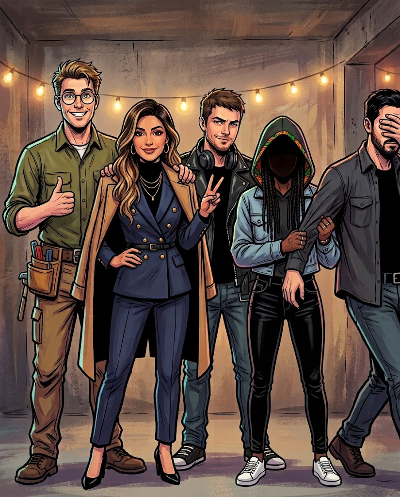
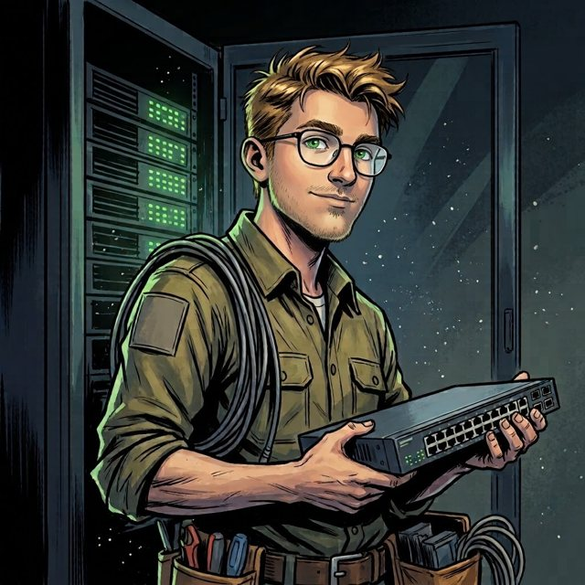
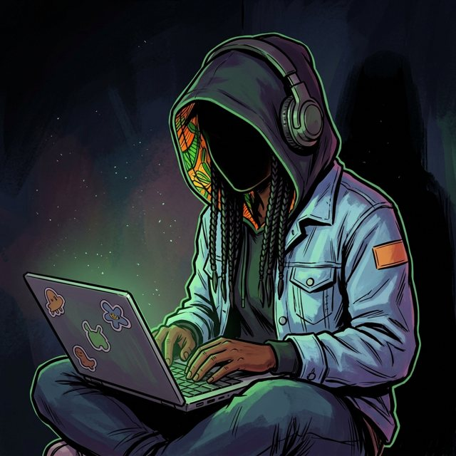

Opération · Scénario fictif
RECORDER-451
Le ministère de la Défense nous confie la Zone 67 : protéger l'archive d'un extraterrestre muet, alors que les Gris sont infiltrés jusqu'au gouvernement. Cinq agents, un serveur, zéro droit à l'erreur.

// Personnel autorisé
- COMMANDECheffe d'équipe

FORGEDevOps · réseau- SENTINELLEExpert cyber
- CYPHERDéveloppeur

RELAISDéveloppeuse alternante
// Pièces du dossier
La BD — Acte 1
9 planches : l'arrivée en Zone 67 et la décision de l'équipe.
Ouvrir →Dossier techniqueServeur, réseau, Bouclier, Godkiller, PRA : toutes les explications détaillées.
Ouvrir →SourcesANSSI, Veeam, CISA, NIST : nos références en anglais.
Ouvrir →BTS SIO SISR · Projet d'anglais · Scénario fictif — toute ressemblance serait fortuite.